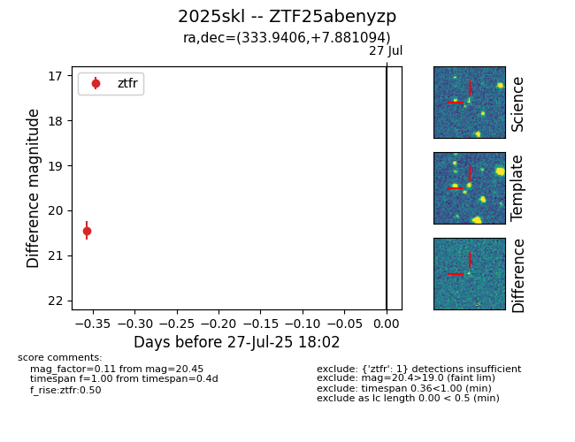

Target 2025skl at 2025-07-27 18:02, see:
FINK: fink-portal.org/2025skl
Lasair: lasair-ztf.lsst.ac.uk/objects/2025skl
ALeRCE: alerce.online/object/2025skl
TNS: wis-tns.org/object/2025skl
YSE: ziggy.ucolick.org/yse/transient_detail/2025skl
alt names
ZTF25abenyzp (ztf,fink)
2025skl (tns,yse)
coordinates:
equatorial (ra, dec) = (333.9406,+7.88109)
galactic (l, b) = (70.1969,-38.56333)
photometry
last ztfr=20.45
1 ztfr detections
